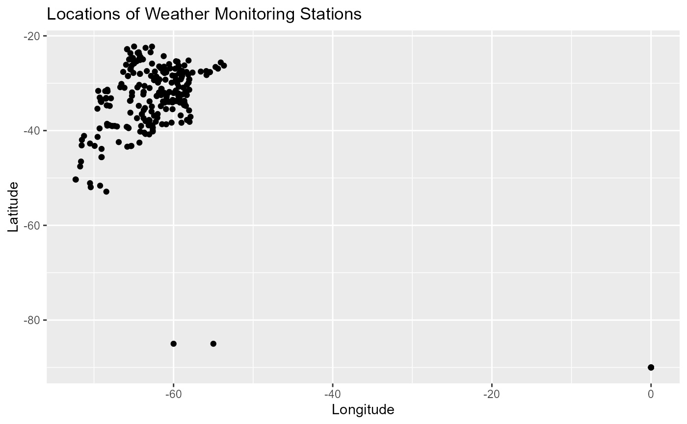

This dataset contains metadata about various weather monitoring stations, including their locations, types, and operational details. It is a useful resource for researchers interested in geospatial and temporal analysis of weather data collection across different provinces.
Usage
data(metadata)Format
A data frame with the following columns:
- id
Character. Unique identifier for each monitoring station (e.g., "A872999").
- nombre
Character. Name of the station, often indicating its function or affiliation (e.g., "Instituto de Clima y Agua").
- tipo
Character. The type of weather monitoring equipment (e.g., "Nimbus THP").
- localidad
Character. The locality or town where the station is located (e.g., "Hurlingham").
- provincia
Character. Province in which the station is located (e.g., "Buenos Aires", "La Pampa").
- lat
Numeric. Latitude of the station in decimal degrees (e.g., "-36.54").
- lon
Numeric. Longitude of the station in decimal degrees (e.g., "-63.99").
- altura
Numeric. Altitude of the station above sea level, in meters (e.g., "165.0").
- ubicacion
Character. Additional descriptive information on the location, often including addresses or notable landmarks (e.g., "Jardin Botanico Ragonese INTA").
- desde
POSIXct. Date when the station started operations, formatted in ISO 8601 (e.g., "2000-01-04T00:00:00Z").
- hasta
POSIXct. Date when the station ended operations (if applicable), formatted in ISO 8601 (e.g., "2024-05-23T00:00:00Z").
Details
Each row in the dataset represents a unique weather monitoring station. The data includes spatial and temporal coverage, which can be used for mapping and analyzing the operational status of weather stations across different regions.
Examples
data(metadata)
head(metadata)
#> id nombre tipo localidad
#> A872999 A872999 Instituto de Clima y Agua Nimbus THP Hurlingham
#> A872834 A872834 Lima - EEA San Pedro Nimbus THP Lima
#> A872823 A872823 Anguil -EEA Anguil Nimbus THP Anguil
#> A872822 A872822 Huinca Renanco - EEA Anguil Nimbus THP Huinca Renanco
#> A872821 A872821 Gral San Martin - EEA Anguil Nimbus THP General San Martin
#> A872819 A872819 Miramar - EEA Balcarce Nimbus THP Miramar
#> provincia lat lon altura
#> A872999 Buenos Aires -90.00 0.00 22.0
#> A872834 Buenos Aires -34.08 -59.21 28.0
#> A872823 La Pampa -36.54 -63.99 165.0
#> A872822 Córdoba -34.77 -64.37 189.0
#> A872821 La Pampa -38.00 -63.52 177.9
#> A872819 Buenos Aires -38.15 -57.99 12.0
#> ubicacion desde
#> A872999 Jardin Botanico Ragonese INTA 2000-01-04T00:00:00Z[UTC]
#> A872834 Ruta 9 - Km 100 - Lima 2010-08-25T00:00:00Z[UTC]
#> A872823 Ruta Nacional Nº 5 Km. 580. CP: 6326 2010-09-13T00:00:00Z[UTC]
#> A872822 Ruta Nac. Nº35 Km.535 CP: 6270 2010-09-06T00:00:00Z[UTC]
#> A872821 Ruta Nac. Nº35 Km. 110. CP: 8206 2010-09-10T00:00:00Z[UTC]
#> A872819 Ruta Nº 77, km.20. CP:7607 Gral Alvarado 2010-11-11T00:00:00Z[UTC]
#> hasta
#> A872999 2024-05-23T00:00:00Z[UTC]
#> A872834 2024-03-23T00:00:00Z[UTC]
#> A872823 2024-06-18T00:00:00Z[UTC]
#> A872822 2022-11-02T00:00:00Z[UTC]
#> A872821 2022-06-15T00:00:00Z[UTC]
#> A872819 2024-02-01T00:00:00Z[UTC]
# Example: Plotting the stations on a map using latitude and longitude
if (requireNamespace("ggplot2", quietly = TRUE)) {
library(ggplot2)
ggplot(metadata, aes(x = lon, y = lat)) +
geom_point() +
labs(title = "Locations of Weather Monitoring Stations",
x = "Longitude", y = "Latitude")
}
#> Want to understand how all the pieces fit together? Read R for Data
#> Science: https://r4ds.hadley.nz/
